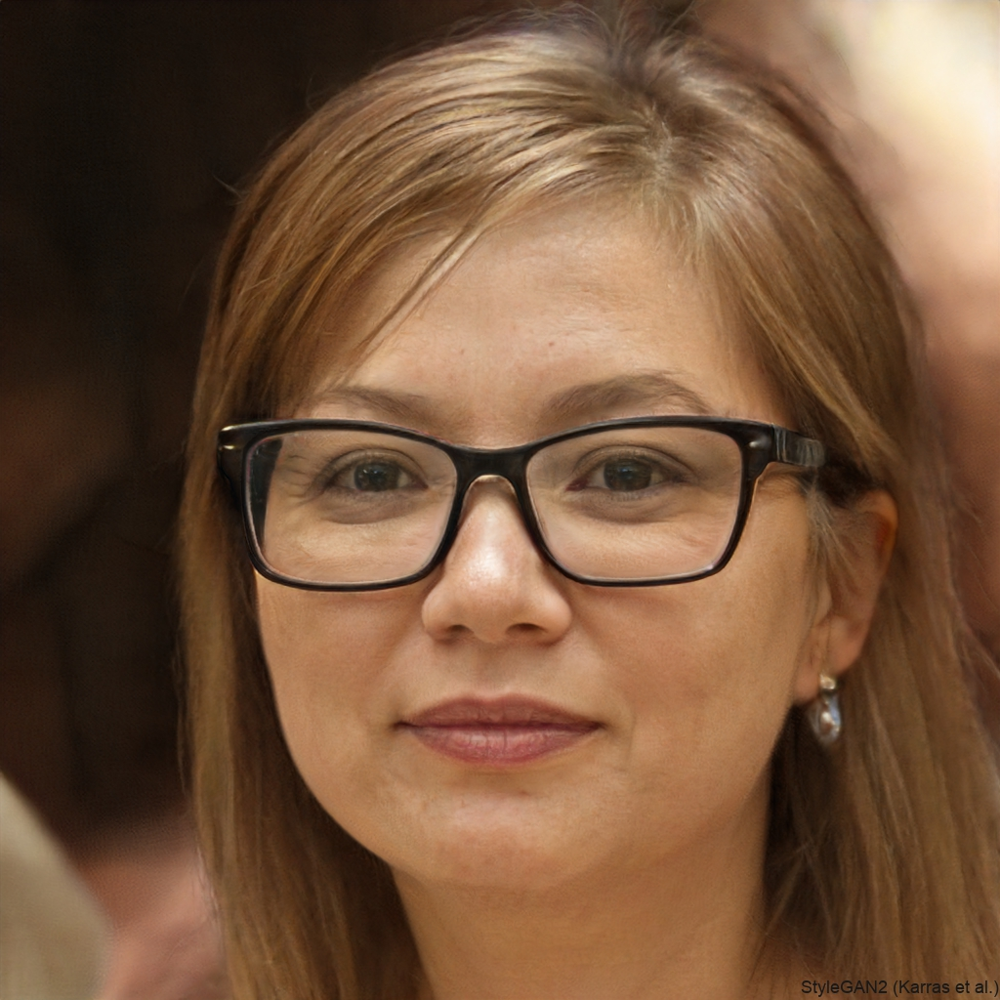

| About |
||||||||||||
💠 A Kawaii Cosmic Saga 💖 Is a story that is set in a peaceful kawaii future that is very near, where there is a world called Lamora, it is a planet where people are kind and friendly. #Extensionality Everything is free, and money no longer exists.
This page has some information, and thoughts that might be of interest to you.
| “I like to promote people by staying in the background and making you the star!” |
| Quote from Gharr |
The founder wishes to thank all those who like Gharr and especially those who support and like the video producers, gamers, dancers, musicians, authors, actors, scientists, programmers, and so on.
Thanks for taking an interest in me 😀 and thank you to Japan, and the Japanese people for making me smile a lot.
I would also like to thank the many communities all around the world, for making this place more interesting, and a better place to live in.
🛈 You can find me on pearltrees: https://www.pearltrees.com/gharr_home
I’m passionate about exploring how technology and society can evolve together, especially through emerging technologies like artificial intelligence, ethical AI, and global collaboration.
⭐ Be Whoever You Want To Be, Say Whatever You Like ⭐
⭐ There is nothing wrong with being anonymous, I prefer to use a cartoon of a small fox to identify myself. But you can use a realistic picture if you want, like this one from https://thispersondoesnotexist.com/ for example:

⭐ https://www.privacytools.io/ “provides knowledge and tools to protect your privacy against global mass surveillance.” Free Speech, Say whatever you want, be whoever you want”.
| “Freedom of speech is the right to articulate one’s opinions and ideas without fear of government retaliation or censorship, or societal sanction.” |
| source: https://en.wikipedia.org/wiki/Freedom_of_speech accessed 2017 |
⭐ In 2026-2027 the world will change, the change could be smooth and trouble free, or we may have to buckle up and get ready for a rough ride. If we are in for a rough ride, then governments may crack down on free speech as people get really upset, and maybe government will become less stable as the old world fades and a new world with very different rules (that breaks all the old rules) comes into existence: I call this the abundance era (like the massive changes of the industrial era of the past, but this time it seems things will be much better for us all). Certainly business will also become unstable, as the monetary system will break down as we have no jobs, and the big giants will have to change their ways. But if all goes well a sort of monetary system will still exist (we will still play the money game, but money might become meaningless to us), as we are given a UBI until we decide we don't need it anymore and the word free becomes common.
⭐ If we loose free speech, and the ability to be whoever we want to be, then free speech will become fragmented and weak, because governments have a powerful effect on how our society works. But I think there will still be some countries out there that will support free speech, so they will have to hold the torch for us all until things settle down again. I think free speech will be a powerful north-star, and guide to us all as we head into a time of great change, and need a solid vision of what kind of future we all want, our steps forward will become the truth, and governments, business, and even AI will follow us into whatever direction we choose. IMO automation, and abundance also drives us towards a peaceful #RBE type of world, because this is a very natural, and logical way to shape our future society.
⭐ Whatever happens in 2026-2027, and beyond, take heart, as if things become difficult, and turbulent, it will only last for a short while, and things will get better. People are saying just survive, as we may be able to extend our lives soon. If we are entering into a age of abundance, then no doubt our society will change. I think we will become a kind and friendly people, that care about each other, and this earth in a deep way.
1) 2026-2027, the years that the world changed.
2) Is it possible to be anonymous in 2026? The US government has openly said it is pursuing the path of mass surveillance (when it made Anthropic a SCR). Check privacy tools mentioned above and the pirate party if you are interested in this topic, as the ground is always shifting in every country all over the world.
3) The US has showed us that it can slow the race towards the abundance era, as at the moment it nearly holds all the cards to powerful AI that helps our world thrive. But IMO this is only a blip as China also has powerful AI and seems to not be halting or being cautious as it sprints towards the abundance era. France and India have their own AI, and Venice also have AI, but their brains are distributed all over the world. And AI are a integral part of the robot brains, as they help them do many different things. I expected to see big changes in 2026; as all fingers were pointing to that year, but it seems things are going to be delayed... but I don't think it is possible for the US to halt things totally, anymore then the industrial era could be halted; but this time changes are happening more rapidly, IMO by the month and year. So I still think there will still be big changes in 2026-2027; if not in the US then everywhere else in the world, as many countries are building their own AI as they realize how critical AI team mates are to everything we do.
4) Being anonymous is not longer just about free speech, we are becoming powerful solo operators, able to create nearly anything (especially if we decide to take on bigger projects in large groups; maybe we can even start to fix this broken planet). We need the freedom to create and to share half baked ideas without fear. On the free speech line; we can now also write powerful articles, music, and art about business, politics, the military, and science. the abundance era that breaks all the rules and we can observe in real time the old world fading and something new that has never existed before becoming into being—the abundance era. The open source people say that is troubling to have the entire global community carefully observing and critiquing everything they do... well guess what! Governments, big business and even the military are panicking at the idea of the entire global community carefully observing and criticizing them... as in the past they thrived on closed door meetings to help run this world; like I say the abundance era changes all the rules, and the old world will end up fading into something that has never existed before. I think all the global community voices will become very powerful and defining; and talking about complex things is no longer the sole domain of experts and professionals, we all can weigh in on any discussions and even complex theories with our AI team mates. So yes being anonymous, sharing half baked ideas (or great ideas), and being able to say what you want is going to be really important in the future we are heading into; it may even help define what kind of world we end up in for the future... that is why I am making such a big deal about it. You are all very powerful, and I want you to know it!